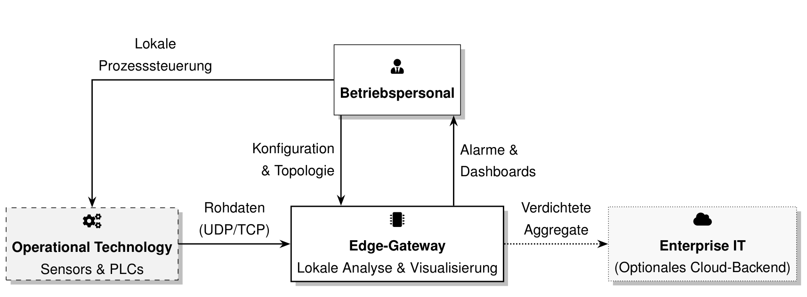
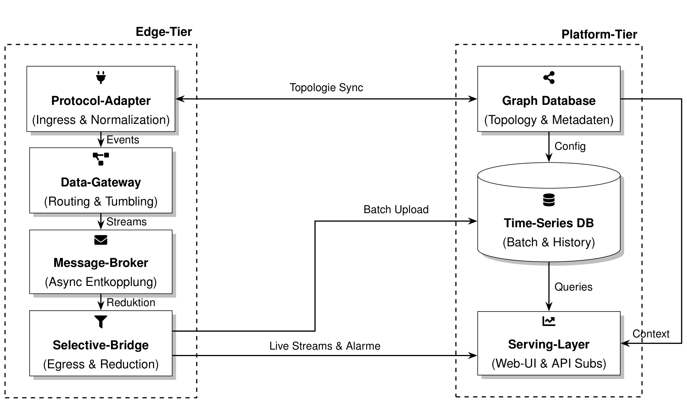
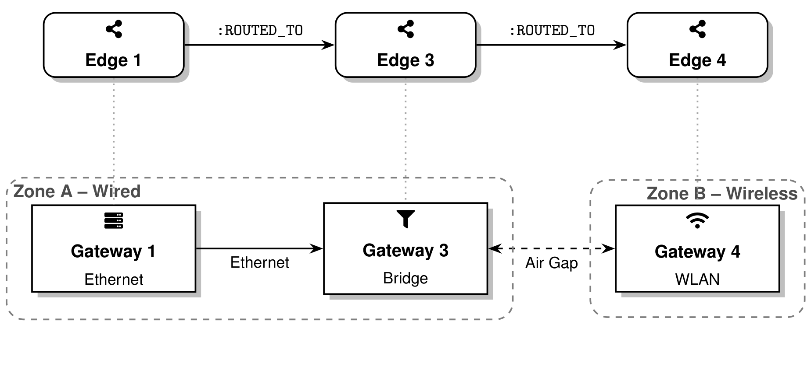
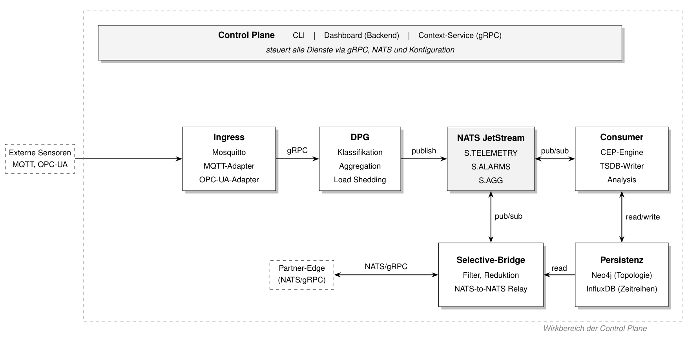
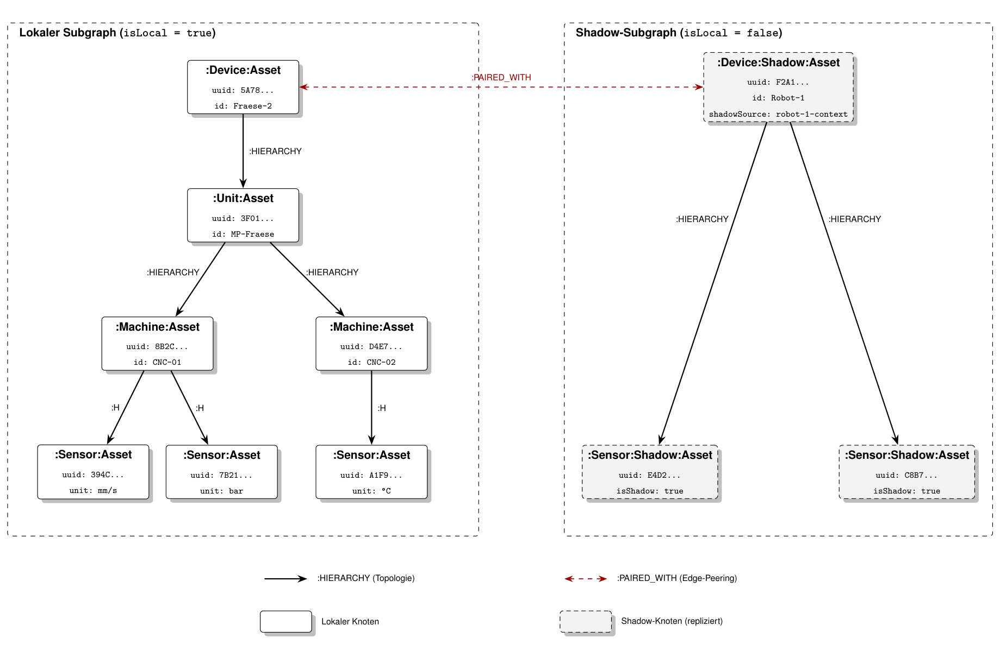
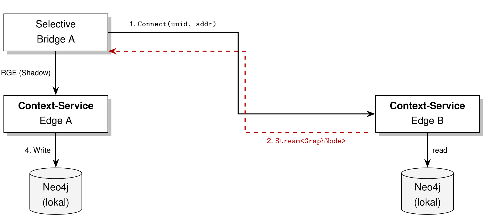
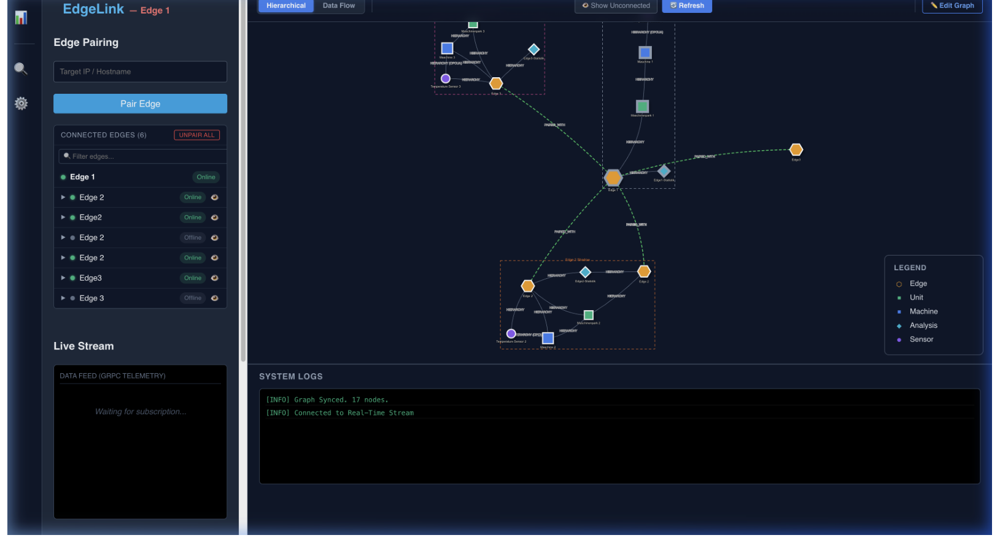
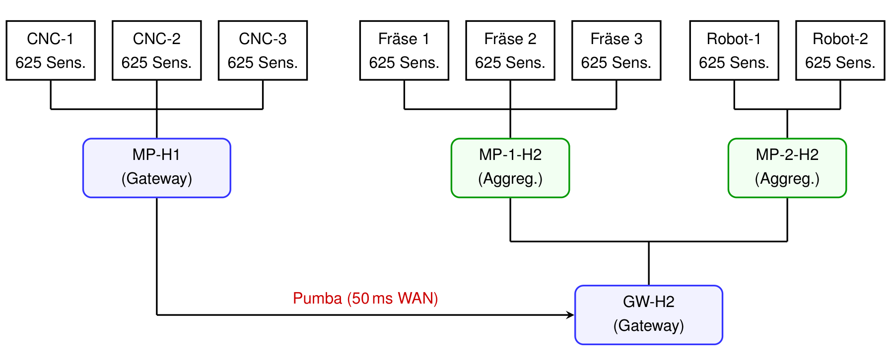

Herausforderung & Problemstellung
Die zunehmende Sensordichte industrieller Anlagen erzeugt Datenvolumina, welche die Übertragungskapazität zentralisierter Cloud-Architekturen übersteigen. Erschwerend wirkt die räumliche Distanz zu überregionalen Rechenzentren: Die daraus resultierenden Übertragungslatenzen sind für echtzeitkritische Regelkreise nicht tolerierbar. Unabhängig davon stehen Anforderungen an die Datensouveränität und den Schutz von Betriebsgeheimnissen einer vollständigen Auslagerung in externe Netze entgegen. Eine rein cloud-zentrierte Architektur kann die Anforderungen an geringe Latenz, Bandbreiteneffizienz und lokale Datenhoheit folglich nicht gleichzeitig erfüllen. Dieses Spannungsfeld bildet den Ausgangspunkt der Arbeit.
Edge-Computing begegnet dem Konflikt, indem Rechenoperationen an den Entstehungsort der Daten verlagert werden. Die dezentrale Vorverarbeitung reduziert den Backbone-Verkehr, vermeidet Lastspitzen im Anlagennetz und senkt die Verarbeitungslatenz auf lokaler Ebene. Zugleich adressiert der Ansatz die historisch gewachsene Trennung zwischen Operational Technology und Information Technology. Die OT-Domäne ist durch proprietäre Protokolle, deterministische Kommunikation und hohe Verfügbarkeitsanforderungen geprägt, die IT-Domäne durch Standardisierung, Skalierbarkeit und datenzentrierte Prozesse. Ein vermittelndes Edge-Gateway bildet damit die Voraussetzung für eine durchgängige Anlagenüberwachung.
Die Dezentralisierung führt ihrerseits zu neuen Anforderungen. Mit der Verteilung steigt die Heterogenität der Datenstrukturen, für die sich relationale Datenmodelle als unzureichend flexibel erweisen. Auf der Kommunikationsebene setzt sich diese Heterogenität fort: Für ressourcenbeschränkte Geräte existiert eine Vielzahl leichtgewichtiger Protokolle, und bei netzwerkübergreifenden Fernaufrufen erfordert die fehlende Standardisierung zusätzliche Übersetzungsschichten, die selbst zur Fehlerquelle werden. Nach der Persistierung tritt zudem ein architektonischer Zielkonflikt zwischen latenzkritischer Echtzeitverarbeitung und rechenintensiver Stapelverarbeitung hervor. Die etablierte Trennung in zwei Verarbeitungsschichten ist funktional, verursacht jedoch erhebliche Wartungsaufwände, da identische Fachlogik im Extremfall in zwei Codebasen zu pflegen ist. Der alternative Ansatz einer durchgängigen Stream-Verarbeitung vereinfacht den Aufbau, verlagert die Anforderungen jedoch auf die performante Neuverarbeitung persistierter Datenströme.
Über die einzelne Anlage hinaus besteht ein strukturelles Defizit. Proprietäre Standards fragmentieren den Markt und begünstigen geschlossene Insellösungen, während eine vereinheitlichende Gesamtarchitektur fehlt; Einzelaspekte wie Latenzreduktion, Interoperabilität oder Skalierbarkeit werden überwiegend isoliert behandelt. Verfügbare Plattformen decken daher Konnektivität und lokale Steuerung ab, lassen jedoch offen, wie hochfrequente Sensordaten dezentral gepuffert, mit topologischem Kontext angereichert und für historische Auswertungen strukturiert abgelegt werden können. Aus dieser Ausgangslage leiten sich drei Motive ab: Wachsende Datenmengen erfordern lokale Rechenressourcen, prädiktive Verfahren setzen bereinigte Zeitreihen mit topologischem Kontext voraus, und die Konvergenz von OT und IT verlangt eine ausfallsichere, logisch entkoppelte Zwischenschicht. Daraus ergeben sich die beiden Forschungsfragen:
F1: Wie kann durch den Einsatz verteilter IoT/IIoT-Systeme
eine Überwachung und Analyse dezentraler Anlagen und Maschinen realisiert werden?
F2: Wie kann ein verteiltes IoT/IIoT-System zur Überwachung und Analyse
dezentraler Anlagen und Maschinen beitragen, während zugleich eine zentrale Datenverarbeitung
und Analyse gewährleistet ist?
Lösungsansatz
Entworfen wurde ein Architekturmodell, das lokale operative Autarkie, getragen von adaptiven Puffermechanismen und Edge-naher Ereignisverarbeitung, mit einer hybriden Datenhaltung auf Basis polyglotter Persistenz verbindet. Es verknüpft Zeitreihen- und Graphdatenbank und etabliert ein dezentrales, graphgesteuertes Routing, das die logische Anlagenstruktur von der physischen Netzwerkinfrastruktur entkoppelt. Die Umsetzung erfolgt als containerisierter Softwareprototyp auf Basis von Docker mit standardisierten Protokollen wie MQTT und gRPC an den Schnittstellen.
Leitend war dabei ein herstellerunabhängiger Rahmen, in dem Systemkomponenten als eigenständige, lose gekoppelte Dienste über standardisierte Schnittstellen ausgeführt werden. Dies ermöglicht eine inkrementelle Weiterentwicklung sowie eine Skalierung in zwei Richtungen: horizontal für steigende Sensorlasten, vertikal für rechenintensive Analysen. Die angestrebte funktionale Balance weist die Verarbeitung nach ihrer Dringlichkeit zu: Latenzkritische Aufgaben werden direkt am Edge ausgeführt, lokale Aggregationsknoten übernehmen die Vorverdichtung, und der Rechenaufwand historischer Analysen wird an übergeordnete Instanzen ausgelagert. Die Orchestrierung folgt dabei einem ressourcenschonenden Software-Defined-Ansatz: die Steuerungslogik ist von den Datenpfaden getrennt.
Makroarchitektur: zwei Ebenen, zwei Knotenklassen
Der Entwurf ist mit dem C4-Modell dokumentiert und als On-Premises-Lösung ausgelegt, die im autarken Inselbetrieb arbeitet, womit funktionale Abhängigkeiten von externen Diensten strukturell entfallen. Die Segmentierung in zwei funktionale Ebenen orientiert sich an der Tier-Architektur der Industrial Internet Reference Architecture: eine Edge-Tier für Datenerfassung und Echtzeitverarbeitung, eine Platform-Tier für Langzeitspeicherung und historische Analyse.
Der Unterschied zwischen den Knotenklassen ist dabei bewusst nicht an die Hardware gebunden, sondern konfigurationsbasiert: beide führen denselben Software-Stack aus und unterscheiden sich nur darin, welche Dienste sie starten. Ein Micro-Edge-Knoten aktiviert ausschließlich die operativen Kernkomponenten: Protocol-Adapter, Data-Processing-Gateway und Message-Broker. Stößt seine lokale Pufferkapazität an die Grenze, leitet er regelbasiert an einen leistungsfähigeren Nachbarknoten weiter; die kritische lokale Alarmierung verbleibt jedoch zwingend auf dem Ursprungsknoten, sodass eine ausgelastete Pufferkapazität die lokale Reaktionsfähigkeit nicht beeinträchtigt. Ein Macro-Edge-Knoten ist dagegen ein Industrie-PC mit eigenem Massenspeicher: er führt zusätzlich Graph- und Zeitreihendatenbank aus, dient als Datensenke für untergeordnete Sensoren und behält bei einer physischen Netzwerktrennung den vollen Funktionsumfang inklusive lokaler Historisierung.
Mikrocontroller und Steuerungen bestehender Brownfield-Anlagen zählen in diesem Entwurf bewusst nicht zur Edge-Ebene. Ihre limitierten Ressourcen oder geschlossenen Architekturen schließen die Ausführung des Software-Stacks aus; sie bleiben reine Datenquellen. Auf dieser Trennung zwischen Micro- und Macro-Edge beruht die gesamte Skalierungslogik des Entwurfs.
Graphgesteuerte Orchestrierung und Semantic Routing
Der Topologie-Dienst fungiert in dieser Architektur nicht als reine Registrierungsstelle, sondern als aktive Steuerungsebene. Während der Zeitreihenspeicher die hochfrequente Telemetrie verarbeitet, modelliert die Graphdatenbank als Property-Graph die Anlagentopologie, die Konfigurationsbeziehungen und die Routing-Regeln. Damit überträgt der Entwurf Prinzipien des Software-Defined Networking auf die Applikationsebene: Kommunikationsbeziehungen und Funktionszuweisungen lassen sich zur Laufzeit ändern, ohne die physische Netzwerktopologie anzufassen. Ein neuer Sensorknoten wird über die Graphkonfiguration integriert statt über manuelle Netzwerkanpassungen.
Im Graphmodell trennt das System dazu das physische Gerät, beschrieben durch Netzwerkadresse, gRPC-Endpunkt und eindeutige Kennung, vom logischen Knoten, der eine fachliche Aufgabe kapselt. Eine gerichtete Verwaltungskante verbindet beide und löst zur Laufzeit auf, welches Gerät für welchen Datenstrom zuständig ist. Sensoren hängen als Asset-Knoten daran, mit Abtastintervall, Protokolltyp, Alarmschwellwerten, Betriebsstatus und der Weiterleitungsstrategie der Selective-Bridge. Bei einem Hardwarewechsel ist deshalb nur die Gerätezuordnung zu aktualisieren; die logischen Kommunikationsbeziehungen zu den Partner-Knoten bleiben unberührt.
Für die Überwindung von Netzwerkgrenzen führt der Entwurf Shadow-Graphen ein: lokal persistierte semantische Abbilder entfernter Knoten, die eine kontrollierte Weiterleitung zwischen Netzwerksegmenten erlauben. Data-Plane für den operativen Datentransfer und Control-Plane für Konfigurationssignale sind dabei getrennt, damit hochfrequente Telemetrie den Topologie-Dienst nicht überlastet.
Quelle: Kyr (2026), Kapitel 1.3, 4.2 und 4.4Ergebnis & Mehrwert
Das Ergebnis ist ein vollständig implementierter, containerisierter Softwareprototyp: zwölf autonome Edge-Knoten mit 143 parallel aktiven Containern und 5.000 simulierten Sensorkanälen, evaluiert in acht Experimenten auf dem Technologie-Reifegrad TRL-4. Ein Dashboard im Serving-Layer zeigt die hierarchische Anlagenstruktur und die Echtzeit-Telemetrie der Edge-Knoten. Die zonenübergreifende Datenverfügbarkeit entsteht über graphgestütztes Semantic Routing mit Shadow-Replikation, ohne zentrale Koordinationsinstanz.
Methodik & Umsetzung
Methodisch folgt die Arbeit dem Design-Science-Research-Ansatz nach Hevner, dessen Drei-Zyklen-Modell den Prozess in theoretische Fundierung, Anwendungsbezug und iterative Artefaktentwicklung gliedert. Jede Entwurfsentscheidung wird dabei gegen die theoretische Fundierung und den Anwendungsbezug geprüft, bevor der nächste Zyklus einsetzt.
Das Architekturkonzept überträgt die Prinzipien der Lambda-Architektur auf eine dezentrale Edge-Umgebung: ein latenzoptimierter Speed-Layer bedient Echtzeitabfragen, ein durchsatzoptimierter Batch-Layer die dauerhafte Persistierung. Die polyglotte Datenhaltung verbindet dafür eine Zeitreihendatenbank für die Messwerte mit einer Graphdatenbank für die topologische Anlagenmodellierung. Die folgenden Abbildungen dokumentieren diesen Weg in drei Schritten, vom Entwurf über die Implementierung bis zum Betrieb im Testbed.
Architekturkonzept
Die folgenden Abbildungen dokumentieren den Entwurf auf drei Abstraktionsebenen: die Einordnung des Systems zwischen Produktionsebene und übergeordneter IT, die innere Gliederung in Edge-Tier und Platform-Tier mit den jeweils aktiven Diensten sowie das Verfahren, über das Daten ohne zentrale Koordinationsinstanz über Netzwerkgrenzen hinweg verfügbar bleiben.



Prototypische Umsetzung
Die Implementierung wird anhand dreier Aspekte dargestellt: dem inneren Aufbau eines einzelnen Edge-Knotens, der Modellierung der Anlagentopologie als Property-Graph und dem Abgleich zweier Knoten über die Shadow-Replikation, bei dem keine Rohdaten den Standort verlassen.



Evaluierung im Testbed
Abschließend zeigen zwei Abbildungen das System im Betrieb: das Dashboard als visuellen Nachweis der Prototypfähigkeit sowie die Topologie des Testbeds, auf dem die im folgenden Abschnitt dokumentierten Messwerte erhoben wurden.


Messergebnisse der Evaluierung
Das Testbed umfasst zwölf autonome Edge-Knoten, 143 parallel aktive Container und 5.000 simulierte Sensorkanäle. Acht Experimente prüften die Systemfähigkeiten gegen die zuvor festgelegten Qualitätsszenarien. Die Verarbeitungskette jedes Edge-Knotens läuft dabei vollständig lokal, ohne Abhängigkeit von einer zentralen Cloud-Instanz.
| Kennzahl | Messwert | Zielvorgabe |
|---|---|---|
| Verarbeitungslatenz der internen Pipeline (P95) | 30,5 ms | < 100 ms |
| Zonenübergreifende Cross-Edge-Traversierung (P95) | 31,8 ms | < 100 ms |
| Isolierte CEP-Alarmlatenz | 29,19 ms | — |
| Lokale Graph-Discovery | 2,12 ms | — |
| Durchsatz unter Volllast | 2.648,5 Nachrichten/s bei 0 % Drop-Rate | — |
| Daraus abgeleitetes Tagesvolumen | 34,8 GB/Tag | 10 GB/Tag (Faktor 3,48) |
| Datenreduktion der Vorverarbeitung am Edge | 33,4 % | — |
| Recovery Time nach simuliertem Containerausfall | 1,2 s, 11.251 gepufferte Datensätze verlustfrei nachgeliefert | — |
| Abfrage über den Speed-Layer | 17,8 ms | — |
| Abfrage über den Batch-Layer | 32,4 ms | — |
| Protobuf statt JSON | −68,4 % bzw. −69,5 % Nachrichtengröße | −40 % (Faktor 1,7) |
Alle direkt messbaren Qualitätsszenarien wurden eingehalten. Der Unterschied zwischen Speed- und Batch-Layer bestätigt dabei die beabsichtigte funktionale Trennung der beiden Verarbeitungsschichten: der Speed-Layer antwortet schneller, der Batch-Layer liefert die dauerhaft persistierte Sicht.
Quelle: Kyr (2026), Kapitel 6 und 7.1Limitationen
Sämtliche direkt messbaren Qualitätsszenarien wurden eingehalten. Die Ergebnisse beziehen sich aber auf die im Labor validierten Kernmechanismen des Softwareprototyps und nicht auf eine feldvalidierte Produktionslösung. Die Arbeit dokumentiert diese Grenze und benennt die Bedingungen, unter denen die Aussagekraft der Messwerte einzuschränken ist:
- Co-Location: Alle 143 Container laufen auf einer einzigen physischen Maschine. Die dadurch entstehende Ressourcenkonkurrenz kann die gemessenen Latenzen in beide Richtungen verzerren: nach oben durch den Wettbewerb um Ressourcen, nach unten, weil reale Netzwerklatenzen innerhalb des Docker-Netzwerks entfallen.
- Netzwerkemulation: Die Pumba-Emulation gleicht den fehlenden Netzwerk-Overhead nur teilweise aus; asymmetrische Verzögerungen und wechselnde Routingpfade realer Weitverkehrsstrecken lassen sich damit nicht vollständig abbilden.
- Synthetische Last: Der Sensor-Simulator erzeugt deterministische Signale mit bekannter statistischer Verteilung. Reale Industriesensoren weisen komplexere Signalcharakteristiken auf.
- Pufferungsdauer: Die geforderte Pufferung über eine Stunde wurde nicht durch einen vollständigen 60-minütigen Ausfalltest belegt, sondern über die architektonische Analyse der persistenten Speicherung in Mosquitto und NATS JetStream begründet, deren Kapazität am Festplattenspeicher und nicht an einem flüchtigen Ringpuffer hängt.
- Betrachtungsrahmen: Die Evaluierung erfasst quantitative Leistungsmetriken. Zu betrieblicher Wartbarkeit, Bedienbarkeit und organisatorischer Integration lassen sich auf Basis einer Laborstudie keine belastbaren Aussagen treffen.
Ausblick
Der nächste Schritt ist die Überführung des Softwareprototyps in eine physisch verteilte Umgebung mit eigenen Edge-Geräten und realen WAN-Strecken. Eine solche Feldvalidierung würde genau die Einschränkung auflösen, die aus der Co-Location entsteht, und die Robustheit des Systems unter realen Netzwerkbedingungen prüfen. Dies bildet den nächsten Schritt zur Erreichung höherer TRL-Stufen. Ein eigener Langzeit-Ausfalltest über die geforderte Stundendauer würde zugleich die bislang architektonisch begründete Pufferung empirisch absichern.
Funktional ist die modulare Adapter-Architektur des Data-Processing-Gateway bereits auf Erweiterung ausgelegt. Die Integration von OPC UA PubSub, PROFINET oder EtherCAT würde das System auf ein deutlich breiteres Spektrum industrieller Anlagen öffnen und damit die eingangs beschriebene Protokollheterogenität umfassender behandeln. Analytisch bietet die asynchrone Struktur des NATS-JetStream-Datenflusses denselben Spielraum: zusätzliche Analysedienste lassen sich als weitere Consumer an den bestehenden Message-Bus hängen, ohne den regulären Verarbeitungspfad zu beeinflussen, etwa für statistische Trendanalysen oder komplexere Korrelationsverfahren. Für unternehmensübergreifende Datenaggregation kann eine Cloud-Ebene als zusätzlicher Aggregationsknoten hinzutreten; gRPC-Schnittstelle und Shadow-Replikation bilden dafür bereits die architektonische Grundlage.
Ein eigener Entwicklungspfad betrifft die Härtung für den produktiven Einsatz ab TRL-5. Dazu gehört die Anbindung über einen dedizierten Security-Proxy ebenso wie ein ein deterministisches Deployment nach dem Infrastructure-as-Code-Paradigma, das die Verlässlichkeit einer verteilten Installation deutlich erhöht. Neue Komponenten würden dabei zunächst in einem passiven Shadow Mode validiert, um ungeprüfte Steuereingriffe in den laufenden Prozess von vornherein auszuschließen. Dieses Vorgehen orientiert sich an etablierten Konzepten der Angriffsabwehr.
Quelle: Kyr (2026), Kapitel 7.3Quellen
Kyr, P. (2026). Technologische Konzeption eines IoT/IIoT-Systems zur skalierbaren Überwachung und Analyse dezentralisierter Daten [Unveröffentlichte Masterarbeit]. Fachhochschule St. Pölten, Masterstudiengang Interactive Technologies, Masterklasse Industrie 4.0.
Die Abbildungen dieser Seite stammen aus der genannten Masterarbeit und tragen deren Kapitel- und Abbildungsnummern.
Zurück zu den Projekten